Фотографии Wikimedia Commons. Авторы, оригиналы и лицензии приведены ниже. Иллюстрации ninja и сборные картинки fruits.webp / vegetables.webp созданы для VietSveta и используются с разрешения владельца.
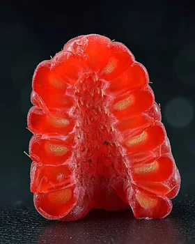
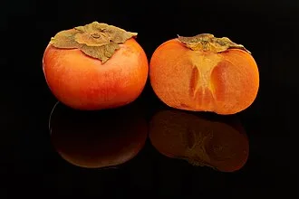
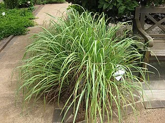
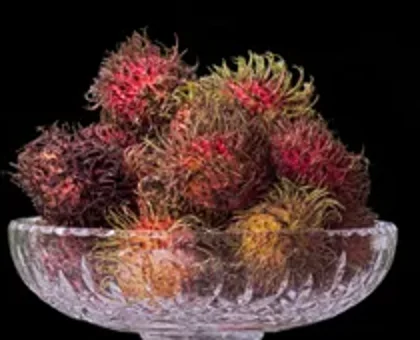
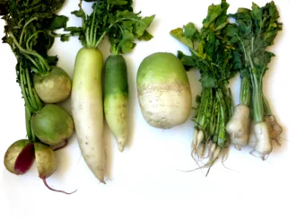
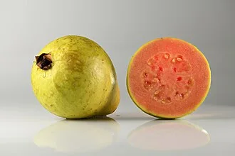
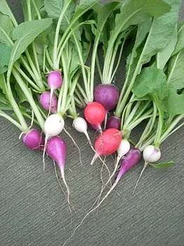
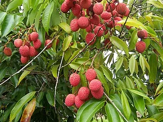
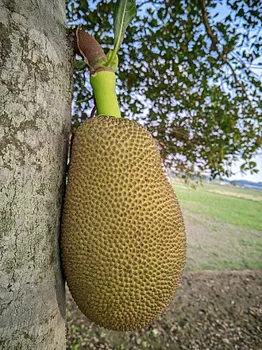
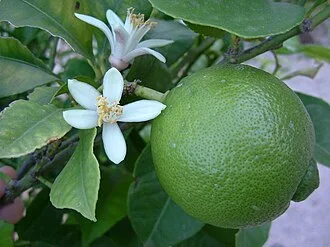
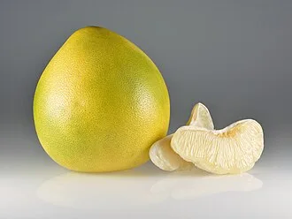
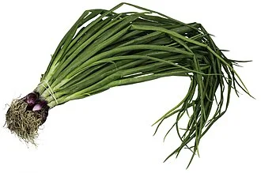
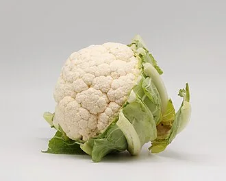
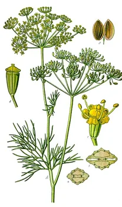